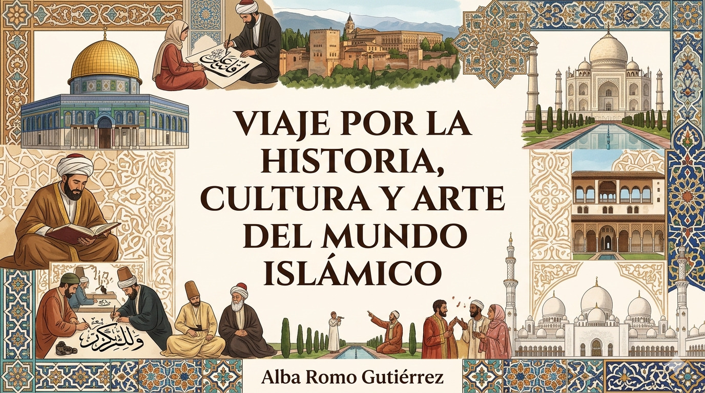

Exploración de la historia, cultura y arte del mundo islámico, proporciona una visión amplia y detallada de la rica herencia de esta civilización. Mediante el análisis de sus monumentos más significativos, su elegante arte y sus tradiciones profundamente enraizadas, este proyecto examina el desarrollo cultural y social de las naciones árabes y su zona de influencia. Es una oportunidad para conocer un legado antiguo que continúa presente en la arquitectura, el pensamiento y la cotidianidad de millones de personas.